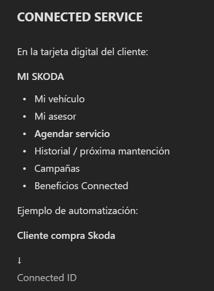

SKODACONNECTED
Invitar a alguien
Comparte la experiencia Skoda. Si la persona invitada estrena, ambos podrán acceder a beneficios.
MIEMBRO QUE INVITA · PILOTO
Javier Zarazaga
El QR se mantiene disponible para una invitación presencial.

Piloto independiente. No modifica CONNECTED SERVICE ni la tarjeta actual. El enlace dirige a la landing ya publicada con el video y posterior formulario.